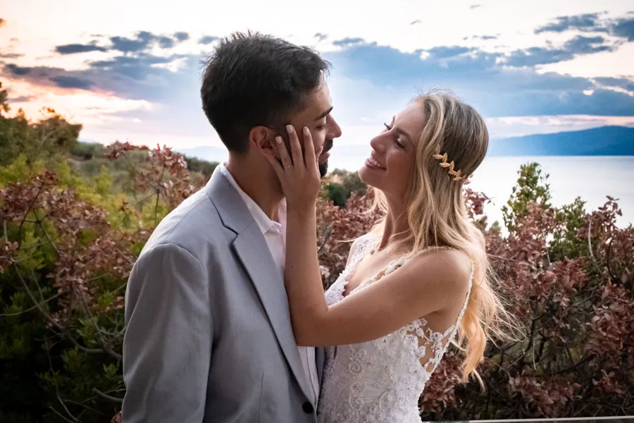
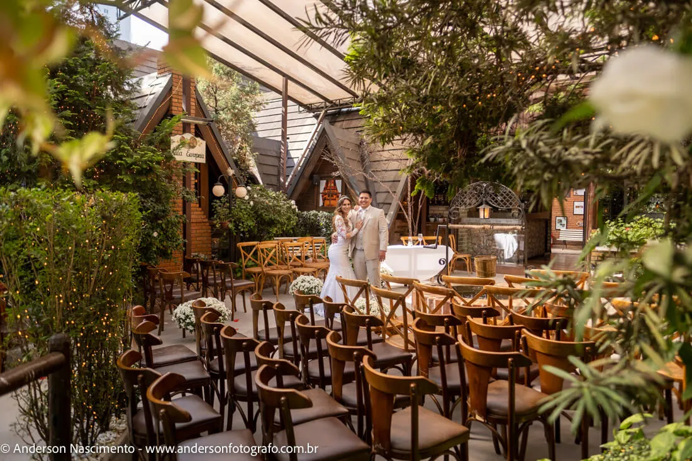
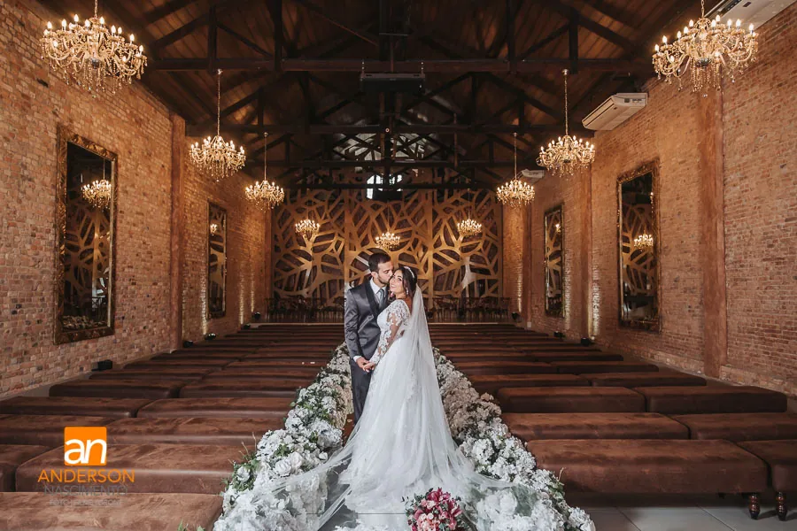
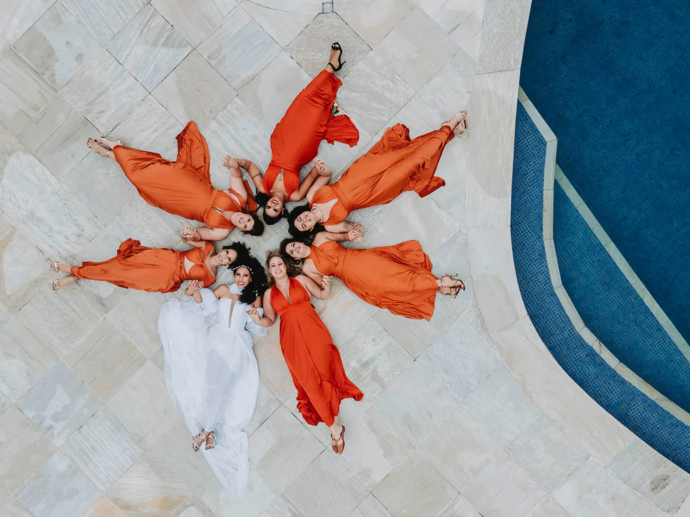
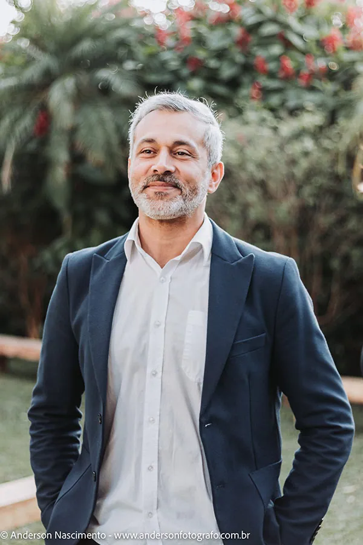

Anderson Nascimento · São Paulo
Vinte anos registrando histórias reais, com foto, vídeo cinematográfico e drone. Da capital ao litoral, do mini wedding ao destination na Grécia.
O estilo
Meu nome é Anderson Nascimento e eu fotografo casamento em São Paulo há mais de vinte anos. Meu estilo é natural, leve e focado no que é espontâneo, porque o que emociona depois não é a pose, é o momento.
Atendo a capital, o interior e o litoral, incluindo casamento no campo, na praia, mini wedding e destination wedding. A cobertura é completa: fotografia, vídeo cinematográfico e imagens aéreas com drone.
Galeria



Depoimentos
Indico de olhos fechados. Desde o início foi muito solícito.Jéssica · casou em 11/11/2025
Trabalham com amor. Você consegue viver de novo o dia ao ver os retratos.Isabele · casou em 10/05/2025
Quase um ano depois, revisitar os registros ainda é nosso prazer.Raphael · casou em 11/01/2025
Reserva
Sinal de reservaR$ 300
Pagar o sinal por PixSinal de reservaR$ 800
Pagar o sinal por PixSinal de reservaR$ 1.500
Pagar o sinal por Pix
Contato
Data, local e o que você imagina para o dia. Respondo com disponibilidade e os pacotes completos.
Contatos publicados em andersonfotografo.com.br, que continua sendo o site oficial.